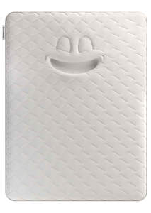

Trade Mark Journal No.2025/014 4 April 2025
UK00004173299 13 March 2025 (20,24,28,35)

- Class 20
- Furniture; bedroom furniture; mirrors; beds; water beds; divans; bedsteads; headboards; bedding, other than bed linen; pillows; mattresses; open spring and pocket spring mattresses; memory foam and latex mattresses; futons; air cushions and air pillows; air mattresses; bed casters not of metal; bed fittings not of metal; chairs; armchairs; cabinets; chests of drawers; wardrobes; tables; desks; footstools; storage furniture; storage boxes [furniture]; bedside tables; bookcases; cots and cradles; sofa beds; bunk beds; children's beds; cushions; parts and fittings for all the aforesaid goods.
- Class 24
- Textiles; fabrics and textiles for beds and furniture; bed linen; duvets; bed covers; bed blankets, bed clothes; covers for duvets; mattress covers; covers for pillows and pillow cases; covers for cushions; bedspreads; covers for hot water bottles; furniture coverings of textile; quilts; parts and fittings for all the aforesaid goods.
- Class 28
- Toys; stuffed toys; soft toys; teddy bears.
- Class 35
- Advertising; marketing; promotional services; Commercial information and advice for consumers [consumer advice shop]; Demonstration of goods; Dissemination of advertising matter; Distribution of samples; Marketing research; Marketing studies; Modelling for advertising or sales promotion; On-line advertising on a computer network; Opinion polling; Presentation of goods on communication media, for retail purposes; Price comparison services; Production of advertising films; Radio advertising; television advertising; Sales promotion for others; Retail services relating to the sale of data processing equipment, computer software, mobiles apps, wearable monitors, monitoring instruments, electronic sensors, movement sensors, computer software in the field of tracking, monitoring and analysing of sleep, movement and heart rate, electronic devices for tracking, monitoring and analysing of sleep, movement and heart rate [other than for medical use]; Retail services relating to the sale of mobiles apps in the field of tracking, monitoring and analysing of sleep, movement and heart rate, downloadable software applications in the field of tracking, monitoring and analysing of sleep, movement and heart rate; Retail services relating to the sale of diagnostic systems, namely, computer hardware and software for use in analysing and evaluating beds, bedding and mattresses; Retail services relating to the sale of furniture, bedroom furniture, mirrors, beds, water beds, divans, bedsteads, headboards, bedding, pillows, mattresses, open spring and pocket spring mattresses, memory foam and latex mattresses, futons, air cushions and air pillows, air mattresses, sleeping bags, bed casters not of metal, bed fittings not of metal, chairs, armchairs, cabinets, chests of drawers, desks, footstools, cots and cradles, sofa beds, bunk beds, children’s beds, cushions; Retail services relating to the sale of textiles, fabrics and textiles for beds and furniture, bed linen, duvets, bed covers, bed blankets, bed clothes, covers for duvets, mattress covers, covers for pillows and pillow cases, covers for cushions, bedspreads, covers for hot water bottles, pyjama cases, furniture coverings of textile, eiderdowns, quilts, parts and fittings for all the aforesaid goods; retail services relation to the sale of toys, stuffed toys, soft toys, teddy bears; information, advisory and consultancy services relating to all of the aforesaid.
Dreams Limited
Representative: Abion UK Limited